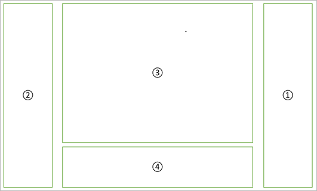
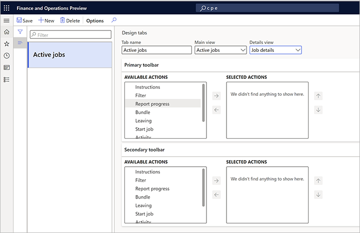
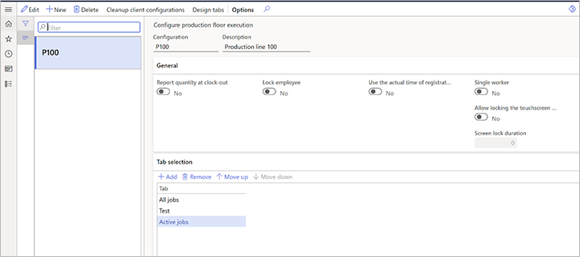

Gestalten der Ausführungsschnittstelle auf Produktionsebene
Important
Dynamics 365 for Finance and Operations hat sich zu speziell entwickelten Anwendungen entwickelt, mit denen Sie bestimmte Geschäftsfunktionen verwalten können. Weitere Informationen zu diesen Änderungen finden Sie im Dynamics 365-Lizenzierungshandbuch.
Important
Die hier aufgeführten Funktion sind alle oder teilweise im Rahmen einer Vorschauversion verfügbar. Inhalt und Funktionsweise unterliegen Änderungen. Weitere Informationen zu Vorschauversionen finden Sie in den FAQ zu Dienstupdates für One Version.
Sie können den Inhalt der Benutzeroberfläche für jede Konfiguration entwerfen, die von der Produktionsausführungsoberfläche verwendet wird. So kann es z. B. sein, dass die Arbeitskräfte in einer Arbeitszelle in der Lage sein müssen, Arbeitsanweisungen im Produktionsbereich zu öffnen, während in einer anderen Arbeitszelle keine Anweisungen benötigt werden. In diesem Fall sollten zwei Konfigurationen erstellt werden, eine mit einer Schaltfläche zum Öffnen von Dokumentenanhängen und eine ohne diese Schaltfläche.
Gestalten Sie eine Registerkarte
Auf der Seite Produktionsablauf konfigurieren können Sie Registerkarten erstellen und konfigurieren, indem Sie Registerkarten entwerfen im Aktivitätsbereich wählen.
Jede Registerkarte ist in vier Abschnitte unterteilt, wie in der folgenden Abbildung gezeigt.

Die folgenden Elemente sind in der Abbildung zu sehen:
- Primäre Symbolleiste
- Sekundäre Symbolleiste
- Hauptansicht
- Detaillierte Ansicht
Um eine neue Registerkarte zu erstellen und zu konfigurieren, gehen Sie wie folgt vor:
Gehen Sie zu Produktionssteuerung > Einrichten > Fertigungsausführung.
Wählen Sie Design-Registerkarten im Aktivitätsbereich, um die Seite Design-Registerkarten zu öffnen.

Wählen Sie im Aktivitätsbereich Neu aus.
Legen Sie die folgenden Einstellungen in der Kopfzeile der Seite fest:
- Registerkartenname - Geben Sie einen Namen für die Registerkarte an.
- Hauptansicht - Wählen Sie zwischen den beiden vordefinierten Auftragslisten (Aktive Aufträge oder Alle Aufträge).
- Detailansicht - Wählen Sie zwischen einem leeren Wert oder Job-Details. Wenn Sie den leeren Wert wählen, gibt es in der Registerkarte keine Detailansicht. Wenn Sie Job-Details wählen, enthält die Detailansicht eine detaillierte Beschreibung des Jobs, der in der Jobliste in der Hauptansicht ausgewählt ist.
Im Bereich Primäre Symbolleiste wählen Sie, welche Schaltflächen in der primären Symbolleiste verfügbar sein sollen. Die Spalte Verfügbare Aktionen zeigt eine Liste mit allen Schaltflächen, die hinzugefügt werden können. Die Spalten Ausgewählte Aktionen zeigt eine Liste aller Schaltflächen, die in der aktuellen Konfiguration enthalten sind. Verwenden Sie die Schaltflächen zwischen den Spalten, um ausgewählte Elemente nach Bedarf zwischen den Spalten zu verschieben. Verwenden Sie die Aufwärts- und Abwärts-Schaltflächen neben der Spalte Ausgewählte Aktionen, um die Reihenfolge zu steuern, in der die Schaltflächen in der Benutzeroberfläche angezeigt werden.
Wählen Sie im Bereich Sekundär Symbolleiste, welche Schaltflächen in der sekundären Symbolleiste verfügbar sein sollen. Die Spalte Verfügbare Aktionen zeigt eine Liste mit allen Schaltflächen, die hinzugefügt werden können. Die Spalten Ausgewählte Aktionen zeigt eine Liste aller Schaltflächen, die in der aktuellen Konfiguration enthalten sind. Verwenden Sie die Schaltflächen zwischen den Spalten, um ausgewählte Elemente nach Bedarf zwischen den Spalten zu verschieben. Verwenden Sie die Aufwärts- und Abwärts-Schaltflächen neben der Spalte Ausgewählte Aktionen, um die Reihenfolge zu steuern, in der die Schaltflächen in der Benutzeroberfläche angezeigt werden.
Verknüpfen einer Registerkarte mit einer Konfiguration
Nachdem Sie alle benötigten Registerkarten entworfen haben, können Sie diese mit einer Konfiguration verknüpfen.
Gehen Sie zu Produktionssteuerung > Einrichten > Ausführung der Produktionsfläche konfigurieren.

Wählen Sie auf dem Inforegister Registerauswahl Hinzufügen.
Eine neue Zeile wird dem Raster hinzugefügt. Wählen Sie für diese neue Zeile den Namen einer Registerkarte, die Sie der Konfiguration hinzufügen möchten.
Fahren Sie fort, weitere Registerkarten nach Bedarf hinzuzufügen.
Verwenden Sie die Schaltflächen Aufwärts bewegen und Abwärts bewegen in der Symbolleiste, um die Registerkarten nach Bedarf anzuordnen. Die Registerkarten werden von links nach rechts in der im obigen Screenshot gezeigten Reihenfolge angezeigt (die oberste Registerkarte wird links angezeigt).